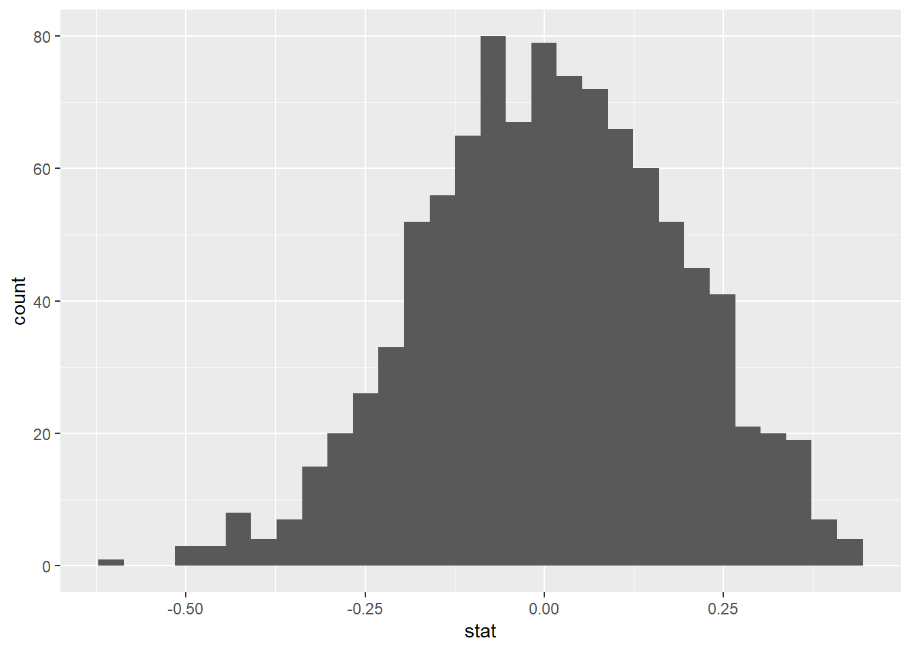
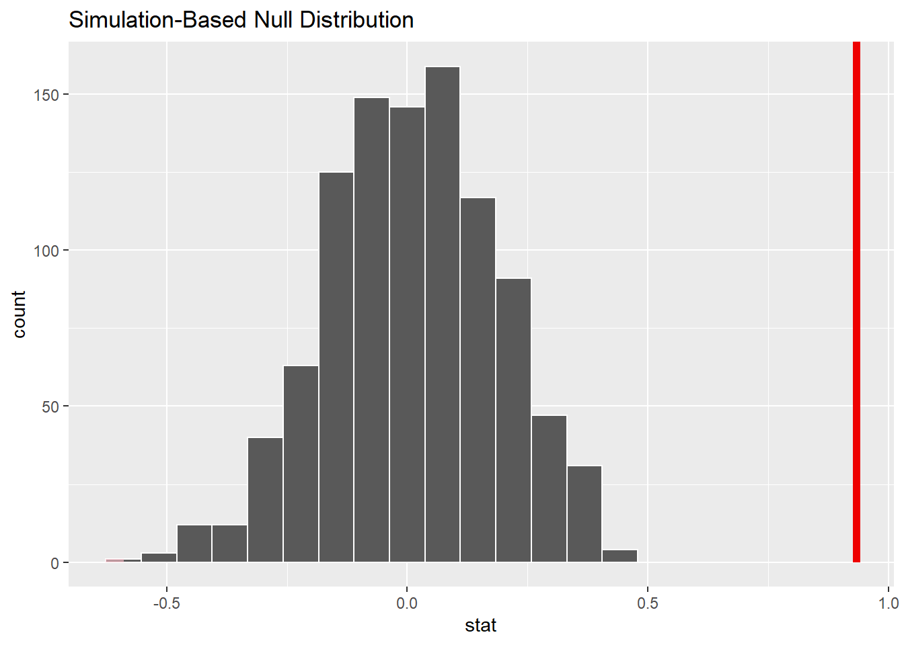

# Loading all libraries
library(tidyverse)
## -- Attaching packages --------------------------------------- tidyverse 1.3.0 --
## v ggplot2 3.3.2 v purrr 0.3.4
## v tibble 3.0.4 v dplyr 1.0.2
## v tidyr 1.1.2 v stringr 1.4.0
## v readr 1.4.0 v forcats 0.5.0
## Warning: package 'tibble' was built under R version 4.0.3
## Warning: package 'readr' was built under R version 4.0.3
## -- Conflicts ------------------------------------------ tidyverse_conflicts() --
## x dplyr::filter() masks stats::filter()
## x dplyr::lag() masks stats::lag()
library(mosaic)
## Registered S3 method overwritten by 'mosaic':
## method from
## fortify.SpatialPolygonsDataFrame ggplot2
##
## The 'mosaic' package masks several functions from core packages in order to add
## additional features. The original behavior of these functions should not be affected by this.
##
## Attaching package: 'mosaic'
## The following object is masked from 'package:Matrix':
##
## mean
## The following objects are masked from 'package:dplyr':
##
## count, do, tally
## The following object is masked from 'package:purrr':
##
## cross
## The following object is masked from 'package:ggplot2':
##
## stat
## The following objects are masked from 'package:stats':
##
## binom.test, cor, cor.test, cov, fivenum, IQR, median, prop.test,
## quantile, sd, t.test, var
## The following objects are masked from 'package:base':
##
## max, mean, min, prod, range, sample, sum
library(ggthemes)
##
## Attaching package: 'ggthemes'
## The following object is masked from 'package:mosaic':
##
## theme_map
library(GGally)
## Registered S3 method overwritten by 'GGally':
## method from
## +.gg ggplot2
library(readxl)
library(here)
## here() starts at C:/Users/hugo_/Documents/Work/MSc Finance/LBS MFA/Courses/02 Data Analytics/00 Git & RStudio/my_website_final
library(skimr)
##
## Attaching package: 'skimr'
## The following object is masked from 'package:mosaic':
##
## n_missing
library(janitor)
##
## Attaching package: 'janitor'
## The following objects are masked from 'package:stats':
##
## chisq.test, fisher.test
library(broom)
library(tidyquant)
## Loading required package: lubridate
##
## Attaching package: 'lubridate'
## The following objects are masked from 'package:base':
##
## date, intersect, setdiff, union
## Loading required package: PerformanceAnalytics
## Loading required package: xts
## Loading required package: zoo
##
## Attaching package: 'zoo'
## The following objects are masked from 'package:base':
##
## as.Date, as.Date.numeric
##
## Attaching package: 'xts'
## The following objects are masked from 'package:dplyr':
##
## first, last
##
## Attaching package: 'PerformanceAnalytics'
## The following object is masked from 'package:graphics':
##
## legend
## Loading required package: quantmod
## Loading required package: TTR
## Registered S3 method overwritten by 'quantmod':
## method from
## as.zoo.data.frame zoo
## Version 0.4-0 included new data defaults. See ?getSymbols.
## == Need to Learn tidyquant? ====================================================
## Business Science offers a 1-hour course - Learning Lab #9: Performance Analysis & Portfolio Optimization with tidyquant!
## </> Learn more at: https://university.business-science.io/p/learning-labs-pro </>
library(infer)
##
## Attaching package: 'infer'
## The following objects are masked from 'package:mosaic':
##
## prop_test, t_test
library(openintro)
## Loading required package: airports
## Loading required package: cherryblossom
## Loading required package: usdata
##
## Attaching package: 'openintro'
## The following object is masked from 'package:mosaic':
##
## dotPlot
## The following objects are masked from 'package:lattice':
##
## ethanol, lsegments
library(tidyquant)
library(ggplot2)
library(patchwork)
## Warning: package 'patchwork' was built under R version 4.0.3
library(infer)
IMDB ratings: Differences between directors
Recall the IMBD ratings data. I would like you to explore whether the mean IMDB rating for Steven Spielberg and Tim Burton are the same or not. I have already calculated the confidence intervals for the mean ratings of these two directors and as you can see they overlap.

First, I would like you to reproduce this graph. You may find geom_errorbar() and geom_rect() useful.
In addition, you will run a hypothesis test. You should use both the t.test command and the infer package to simulate from a null distribution, where you assume zero difference between the two.
Before anything, write down the null and alternative hypotheses, as well as the resulting test statistic and the associated t-stat or p-value. At the end of the day, what do you conclude?
You can load the data and examine its structure
movies <- read_csv(here::here("data", "movies.csv"))
##
## -- Column specification --------------------------------------------------------
## cols(
## title = col_character(),
## genre = col_character(),
## director = col_character(),
## year = col_double(),
## duration = col_double(),
## gross = col_double(),
## budget = col_double(),
## cast_facebook_likes = col_double(),
## votes = col_double(),
## reviews = col_double(),
## rating = col_double()
## )
glimpse(movies)
## Rows: 2,961
## Columns: 11
## $ title <chr> "Avatar", "Titanic", "Jurassic World", "The Ave...
## $ genre <chr> "Action", "Drama", "Action", "Action", "Action"...
## $ director <chr> "James Cameron", "James Cameron", "Colin Trevor...
## $ year <dbl> 2009, 1997, 2015, 2012, 2008, 1999, 1977, 2015,...
## $ duration <dbl> 178, 194, 124, 173, 152, 136, 125, 141, 164, 93...
## $ gross <dbl> 760505847, 658672302, 652177271, 623279547, 533...
## $ budget <dbl> 2.37e+08, 2.00e+08, 1.50e+08, 2.20e+08, 1.85e+0...
## $ cast_facebook_likes <dbl> 4834, 45223, 8458, 87697, 57802, 37723, 13485, ...
## $ votes <dbl> 886204, 793059, 418214, 995415, 1676169, 534658...
## $ reviews <dbl> 3777, 2843, 1934, 2425, 5312, 3917, 1752, 1752,...
## $ rating <dbl> 7.9, 7.7, 7.0, 8.1, 9.0, 6.5, 8.7, 7.5, 8.5, 7....
Your R code and analysis should go here. If you want to insert a blank chunk of R code you can just hit Ctrl/Cmd+Alt+I
## Reproducing the graph
movies_v1 <- movies %>% filter(director == "Steven Spielberg" | director == "Tim Burton") %>% select(director | rating)
movies_v2 <- movies_v1 %>%
group_by(director) %>%
summarise(mean_rating = mean(rating, na.rm=TRUE),
sd_rating = sd(rating, na.rm = TRUE),
count = n(),
se_rating = sd_rating/sqrt(count),
t_critical = qt(0.975, count-1),
margin_of_error = t_critical * se_rating,
lower = mean_rating - t_critical * se_rating,
upper = mean_rating + t_critical * se_rating
)
## `summarise()` ungrouping output (override with `.groups` argument)
p <- ggplot(movies_v2, aes(mean_rating, reorder(director, mean_rating), colour = director)) +
labs(title = "Do Spielberg and Burton have the same mean IMDB ratings?", subtitle = "95% confidence intervals overlap", x= "Mean IMDB Rating", y = "") +
theme_bw() + theme(legend.position = "none") +
geom_point(size = 7) +
geom_text(aes(label = round(mean_rating, 2)), vjust = -1.2, size = 7, colour = "black") +
geom_text(aes(x = upper, label = round(upper, 2)), vjust = -1.6, size = 5, colour = "black") +
geom_text(aes(x = lower, label = round(lower, 2)), vjust = -1.6, size = 5, colour = "black") +
geom_errorbar(movies_v2, mapping = aes(x=mean_rating, xmin=upper, xmax=lower, y = director), width = 0.1, size = 2.5) +
geom_rect(aes(xmin = lower[1], xmax = upper[2], ymin = 0, ymax = 3), colour = "grey", alpha = 0.2)
p

## Hypothesis test with formula
movies <- movies %>%
mutate(spielberg_burton = movies$director %in% c("Steven Spielberg", "Tim Burton"))
movies %>% filter(!is.na(spielberg_burton)) %>%
group_by(spielberg_burton) %>%
summarise(count = n()) %>%
mutate(prop= count/sum(count))
## `summarise()` ungrouping output (override with `.groups` argument)
## # A tibble: 2 x 3
## spielberg_burton count prop
## <lgl> <int> <dbl>
## 1 FALSE 2922 0.987
## 2 TRUE 39 0.0132
t.test(rating ~ spielberg_burton, data = movies)
##
## Welch Two Sample t-test
##
## data: rating by spielberg_burton
## t = -7.4126, df = 39.873, p-value = 5.123e-09
## alternative hypothesis: true difference in means is not equal to 0
## 95 percent confidence interval:
## -1.1878208 -0.6788248
## sample estimates:
## mean in group FALSE mean in group TRUE
## 6.376934 7.310256
## Hypothesis test with infer
obs_diff <- movies %>%
specify(rating ~ spielberg_burton) %>%
calculate(stat = "diff in means", order = c(TRUE, FALSE))
obs_diff
## # A tibble: 1 x 1
## stat
## <dbl>
## 1 0.933
null_dist <- movies %>%
specify(rating ~ spielberg_burton) %>%
hypothesize(null = "independence") %>%
generate(reps = 1000, type = "permute") %>%
calculate(stat = "diff in means", order = c(TRUE, FALSE))
null_dist
## # A tibble: 1,000 x 2
## replicate stat
## <int> <dbl>
## 1 1 0.123
## 2 2 0.0707
## 3 3 0.0889
## 4 4 0.351
## 5 5 0.0811
## 6 6 -0.106
## 7 7 -0.441
## 8 8 0.273
## 9 9 -0.0592
## 10 10 -0.0229
## # ... with 990 more rows
ggplot(data = null_dist, aes(x = stat)) +
geom_histogram()
## `stat_bin()` using `bins = 30`. Pick better value with `binwidth`.

null_dist %>% visualize() +
shade_p_value(obs_stat = obs_diff, direction = "two-sided")

null_dist %>%
get_p_value(obs_stat = obs_diff, direction = "two_sided")
## Warning: Please be cautious in reporting a p-value of 0. This result is an
## approximation based on the number of `reps` chosen in the `generate()` step. See
## `?get_p_value()` for more information.
## # A tibble: 1 x 1
## p_value
## <dbl>
## 1 0